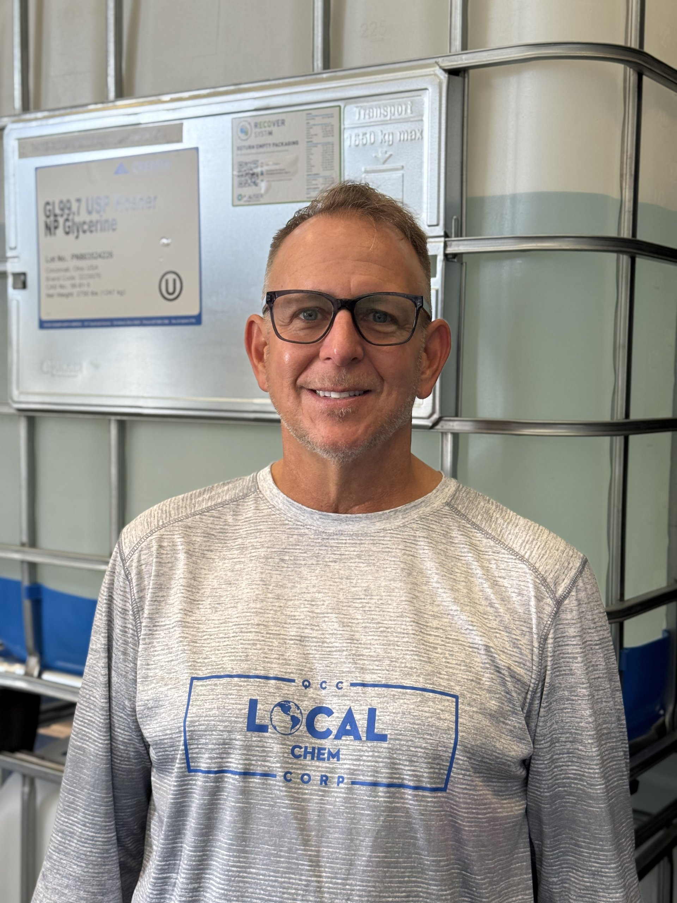

For over 20 years, Quality Chem & Consulting Corp has been producing a wide selection of cleaners, lubricants, and other chemicals for a variety of industries. What started as a small operation has grown into a trusted supplier for businesses across the country, but we've never lost the hands-on, personal approach that got us here.
Our facility in West Melbourne, FL is staffed with an experienced team that is equipped to deliver quickly and accurately on even the most complex orders. From our proprietary product line to the custom blends we produce for our customers, every batch is made with the same attention to detail and commitment to quality that has defined our company since day one.
We believe that strong business relationships are built on trust, consistency, and communication. That's why we take the time to understand each customer's unique needs and work closely with them to deliver solutions that make a real difference in their operations. At Quality Chem, you're not just a purchase order, you're a partner.

As a business owner for over 20 years, Chris brings a wealth of experience to Quality Chem & Consulting Corp. From product formulation to customer relationships to day-to-day operations, Chris has been hands-on with every aspect of the business since its founding, and he wouldn't have it any other way.
Chris prides himself on maintaining personal relationships with his customers. In an industry where many companies have moved toward impersonal, automated service, Chris takes a different approach. He believes that picking up the phone, knowing his customers by name, and standing behind every product that leaves the facility is what sets Quality Chem apart. He continues to actively oversee all aspects of the business, ensuring that the same standards of quality and service that built the company are upheld every single day.
Outside of work, Chris lives in central Florida with his wife Barbara and children Gavin, Maddy, and Grant. He is active in his church and community, and brings the same dedication and integrity to his personal life that he brings to his business.
What our customers value most about working with us
Two decades of chemical manufacturing expertise means we know how to get it right, the first time, every time.
We know our customers by name. You'll always have a direct line to the people making and shipping your products.
Our Melbourne facility is set up for speed. We get your orders produced, packaged, and out the door as quickly as possible.